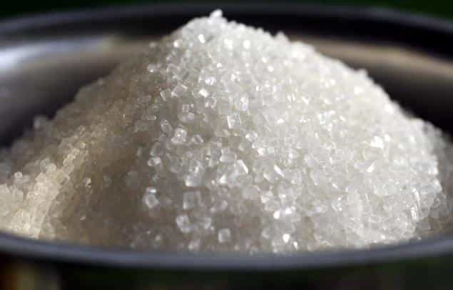

There are many reasons for the generational decline in testosterone as we face it today – porn addiction, xenoestrogens, and a sedentary lifestyle are just some of the many. But the one thing that is responsible more than all of these other factors combined is our dietary habits.
Our food culture has changed more in the last 100 years than it had in the previous 100,000 years. The reason? Large-scale industrial food processing. The industrialization of food introduced us to 4 foods in particular that are starving your brain, expanding your waistline, and wreaking havoc on your testosterone.
1. Refined Sugar

In 1822, the average American consumed about 40 grams of sugar every 5-days – equivalent to the amount in a 12-ounce can of coke. Today, the average American consumes that much sugar every 7-hours (1).
Over the course of the past two hundred years, we’ve increased our sugar intake by 3,000 percent. This is the single biggest change to the human diet since the invention of fire.
– Tyler Graham and Drew Ramsey, authors of The Happiness Diet
The problem with consuming refined sugar is that it instantly enters your bloodstream and spikes your blood glucose levels way up. Your body responds to this by releasing insulin to help deposit the glucose because excess amounts of it are extremely toxic – as any diabetic can tell you. Insulin does such an efficient job at removing the glucose molecules, that blood glucose levels immediately come crashing down – only to have you craving more sugary foods.
These crazy fluctuations in blood sugar lead to a decrease in insulin sensitivity, which means that more and more insulin becomes required to do the same amount of work. Lower insulin sensitivity leads to a significant decrease in both testosterone and growth hormone levels (2, 3). Over the long term, it can even lead to the development of type 2 diabetes.
So yeah, kick your sugar habit. Tame your sweet tooth with some fruit or dark chocolate.
2. Refined Grains
We did not have refined grains before the industrial revolution. We had grains, yes, but they were all stone-ground, which means that we were unable to separate the germ from the kernel. After the industrial revolution, we began to press grains with iron rollers to remove the germ from the kernel. Why did we do this? Because although the germ and kernel packed the grains full of fiber and nutrients, they are also what caused the flour to spoil faster. By removing the germ from the kernel, grains developed a longer shelf-life and were able to be transported far and wide without spoiling.
But here’s the thing about refined grains – your body responds to them the same way it does to refined sugar – sometimes worse, actually. The Glycemic Index (GI) – a figure that represents how much a particular food spikes blood glucose – tells us that white bread spikes insulin even more than a tablespoon of sugar. Furthermore, grains also reduce your body’s ability to synthesize vitamin D – a critical component in testosterone production.
What to do? Switch out all refined carbs—white bread, bagels, white rice, pasta, etc.—for complex carbs like legumes, starchy vegetables, and brown rice.
3. Vegetable and Seed Oils
Just because vegetable oils have the word “vegetable” in them doesn’t mean that they’re healthy. All vegetable oils—canola, safflower, sunflower, soybean, etc.—are manufactured in an industrial factory through which plant sources are refined and heavily processed. Before the industrial revolution, none of these oils existed in our diet. Today, the average American gets 20% of his calories from soybean oil alone (4). And soy, as you already know, exerts its own share of feminizing effects.
The problem with vegetable and seed oils is that they contain an omega-3 to omega-6 ratio that’s completely out of whack. Omega-3’s are anti-inflammatory fatty acids. Omega-6’s are inflammatory fatty acids. Your body requires both to maintain optimal function, but the ratio in vegetable/seed oils is something like 16:1 in the favor of omega-6’s (5). The result? Chronic inflammation.
Inflammation not only lowers your testosterone (6), but it also leaves you at an increased risk of developing a myriad of other health issues as well—heart disease, diabetes, cancer, and depression to name a few (7).
Toss out all of the vegetable and seed oils in your pantry and replace them with male-friendly alternatives like olive oil, coconut oil, MCT oil, grass-fed butter, and avocado oil.
4. Factory Farmed Meats
Animals brought into a factory farmed environment are introduced to an unnatural diet (animals that are used to eating grass are being fed grains and GMO’ed corn), growth hormones (to get them to grow as fast as possible), and antibiotics (because they are getting sick from an unnatural diet and growing too quickly).
The only study I was able to find on this topic observed how a man’s sperm quality was affected by his mother’s meat consumption during pregnancy. In sons of “high-beef consumers” (mothers who ate more than 7 beef meals per week), sperm concentrations were 24.7% lower than in men who’s mothers ate less beef (8). There was no further research I was able to find on how the consumption of factory farmed meat affects a man’s hormones, but an important point to understand is that most of the research performed in this area is sponsored by the food industry giants themselves.
If you want to be an experiment of the FDA, go ahead and keep eating factory farmed meat. Otherwise, opt for organic and grass-fed.
Conclusion
When it comes to naturally increasing your testosterone levels, what you don’t eat might be even more important than what you do eat. There are a bunch of other foods you should avoid as well—soy, flaxseed, and alcohol to name a few—but the above 4 form the bulk of our nutritional intake.
If you’re a man of purpose that wants to function near his peak potential, definitely avoid these 4 foods. Doing so will have profound effects on your energy, mental clarity, as well as your ability to enter your true power.
Interested in natural testosterone optimization? Let’s get on a call to figure out where you’re at, where you’ve been, where you want to be, and then determine whether I can help you get there. Schedule your free appointment here.
Read More: 3 Deadly Mistakes That Are Killing Your Testosterone Levels